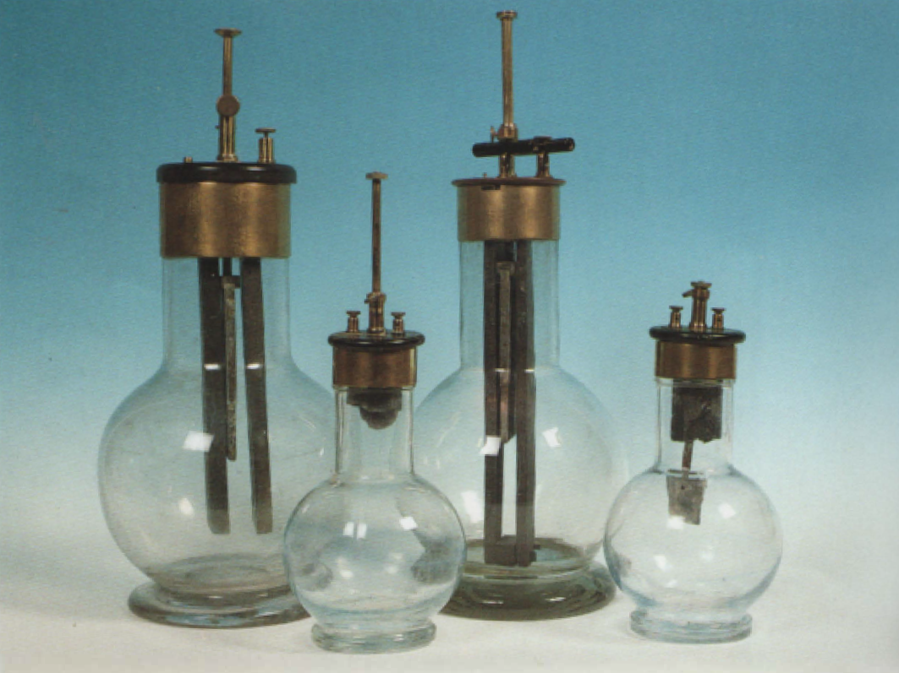

Pila di Grenet
Scuola di provenienza: Liceo Statale "P. E. Imbriani", Avellino
Settore: Elettrologia
Costruttori: Sconosciuto
Materiali: Vetro, zinco, ottone, ferro, carbone di storta, materiale isolante, bachelite
Accessori: Nessuno
Stato di conservazione: Buono.
Descrizione: E’ una bottiglia di vetro contenente una soluzione di acido solforico e di bicromato di potassio. Sul calco della bottiglia è appoggiato un coperchio di materiale isolante a cui sono fissate una barretta di zinco e una di carbone distorta che passano nel liquido. Lo zinco è munito di un’astina scorrevole che permette di estrarlo dalla soluzione per evitare che si consumi quando l’elemento non deve funzionare.